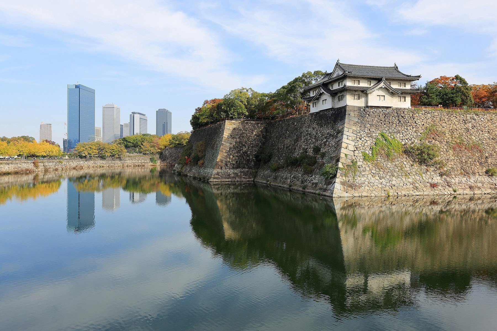
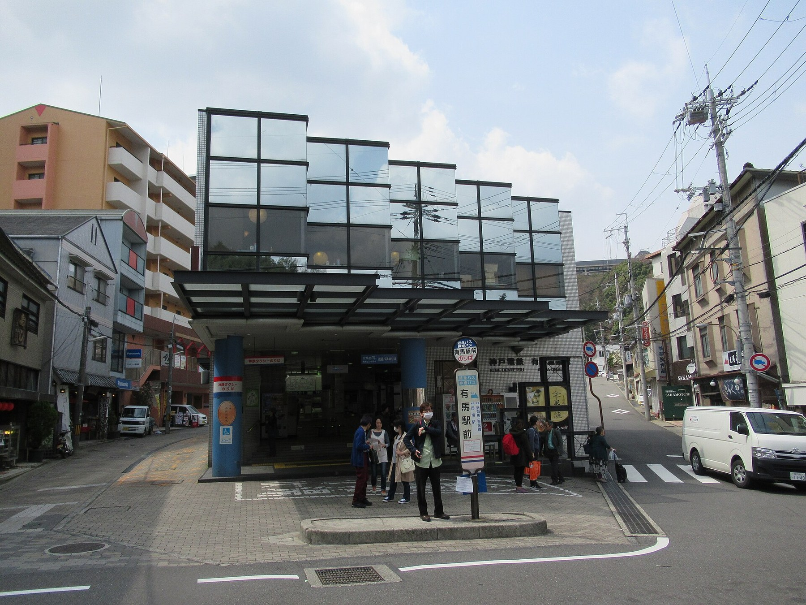
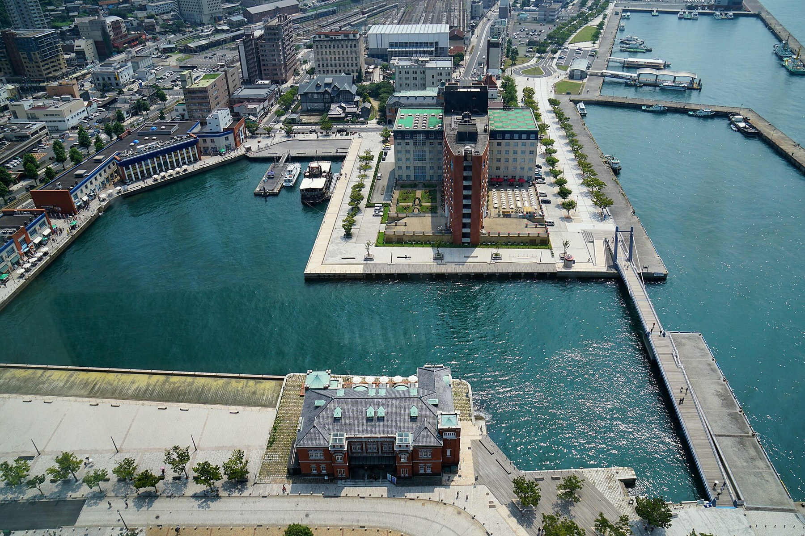
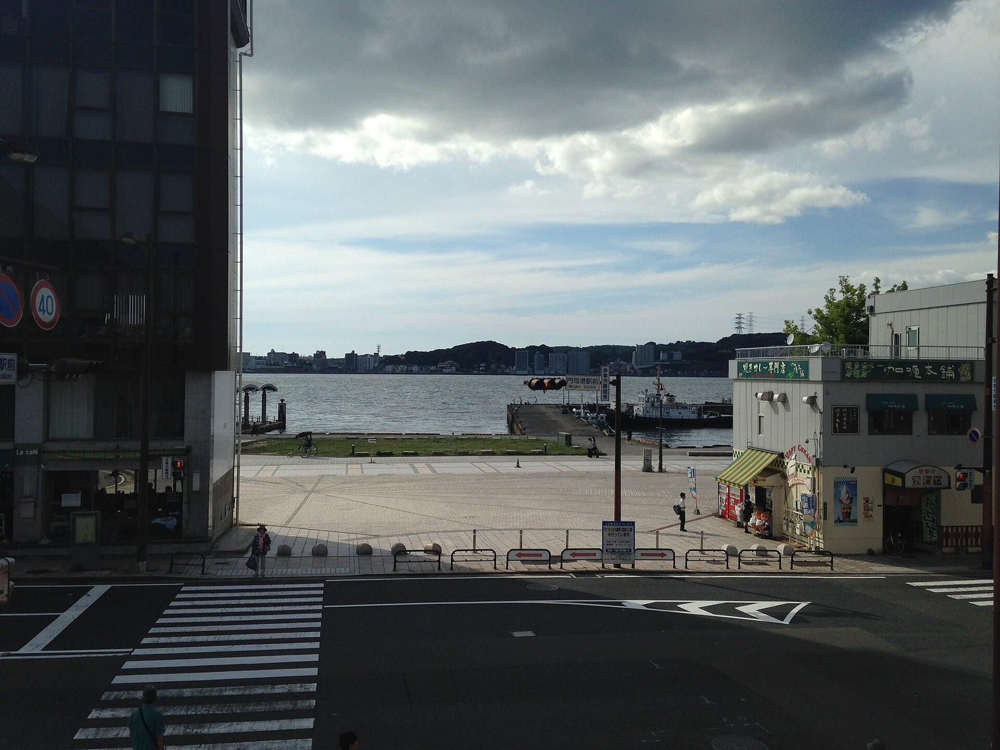
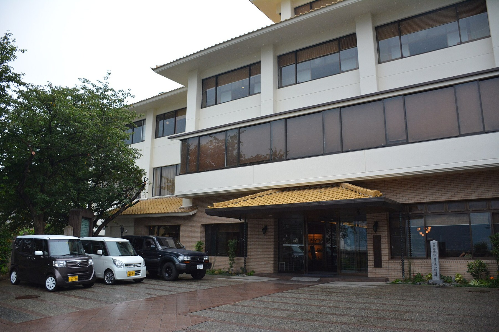
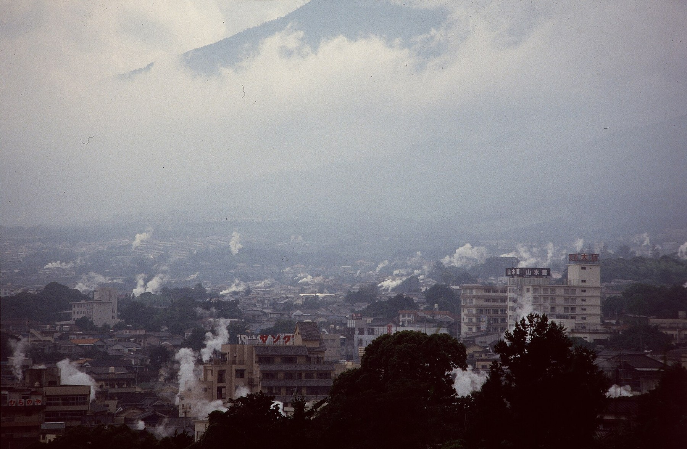
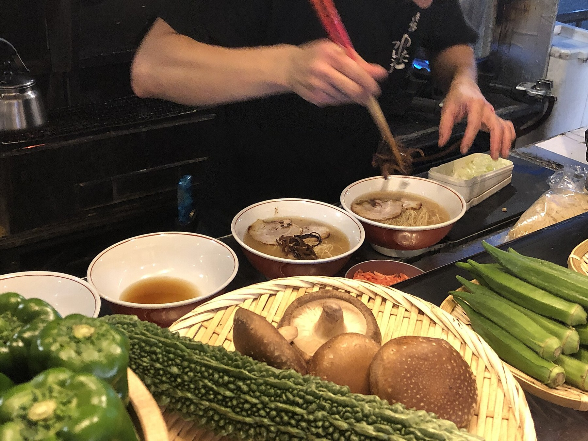
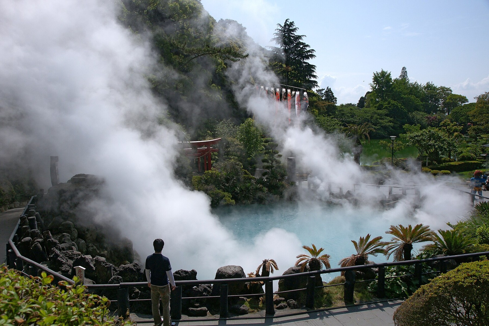

大阪开场现代商业、历史城郭和热闹街区，适合作为进入关西的第一站。
9天8晚｜关西到九州的海路慢行
大阪、神户、有马温泉、门司港、下关、别府温泉、福冈。它不是一条普通城市串联线，而是用一晚海上夜航，把关西与九州自然接起来。
如果只是大阪到福冈，坐新干线当然更快。但这条路线的价值，不在速度，而在体验：先用大阪打开关西的热闹，再到神户看港町和西洋风情，接着在有马泡一晚名汤，让身体先慢下来。
真正的转折点，是从神户六甲岛上船。夜里穿过濑户内海，第二天清晨抵达新门司港，再从门司港 Retro、关门海峡和下关进入九州。这种“从海上抵达”的记忆点，很难被普通铁路转场替代。
后半程安排别府或由布院温泉，再用福冈美食和购物收尾。整条线有城市、有港口、有温泉、有历史，也有不赶路的海边时间。
这条线不靠景点数量取胜，而是靠几个很清楚的记忆点：神户港的傍晚、船上的一夜、门司港的复古建筑、下关的历史停顿和温泉地的放松。








第一天以入境、入住、轻松晚餐为主。住梅田或难波，方便第二天城市游览，也方便后续去神户。
不追求环球影城这类高强度项目，改用大阪城、中之岛、梅田或道顿堀做轻松城市体验。
上午从大阪到神户，轻走北野异人馆、旧居留地和神户港；下午进有马温泉，一泊二食。
上午有马温泉街慢走，下午回神户，傍晚前往六甲岛码头，乘阪九 Ferry 去新门司港。
清晨抵达新门司港，先去门司港 Retro，再坐关门连络船到唐户。午后参观赤间神宫、春帆楼与日清讲和纪念馆。

从小仓或下关转往别府。下午看别府地狱或温泉街，晚上住温泉旅馆。如果想更安静，可改住由布院。
上午在温泉地轻走，午后到福冈。住博多或天神，晚上安排博多拉面、水炊鸡或牛肠锅。
福冈不适合排太满。上午太宰府，下午大濠公园或百道海滨，晚上回天神/博多吃饭购物。
福冈机场离市区很近，最后一天不用赶。上午补购物，中午后去机场，预留退税、托运和安检时间。
以下为日本境内落地预算粗估，按普通舒适型安排。实际价格会随日期、房型、温泉旅馆和船舱等级波动。
| 项目 | 内容 | 参考预算/人 |
|---|---|---|
| 住宿 | 大阪2晚、有马1晚、船上1晚、下关/小仓1晚、别府/由布院1晚、福冈2晚 | 90,000-150,000日元 |
| 交通 | 关西机场到大阪、大阪神户、有马、阪九 Ferry、新门司接驳、门司港/下关、别府、福冈市内与机场 | 35,000-55,000日元 |
| 餐饮 | 大阪熟食、神户午餐、船上餐、唐户熟食、温泉旅馆餐、福冈特色熟食 | 35,000-55,000日元 |
| 门票杂费 | 大阪城可选、地狱巡礼、寄存、连络船、城市交通补差等 | 8,000-15,000日元 |
| 合计 | 不含国际机票、签证保险、购物和服务费 | 168,000-275,000日元 |
这版不再压缩天数。大阪给城市开场两晚，有马和别府各安排一晚温泉，中间用神户到新门司的夜船做核心体验，最后福冈两晚从容收尾。
| 夜数 | 住宿地 | 安排理由 |
|---|---|---|
| 第1-2晚 | 大阪 | 抵达后不赶路，第二天完整看大阪，减少落地疲劳。 |
| 第3晚 | 有马温泉 | 神户之后顺路进入关西名汤，作为第一段休息节点。 |
| 第4晚 | 阪九 Ferry 船上 | 神户六甲岛上船，夜航濑户内海，把长距离转场变成体验。 |
| 第5晚 | 下关或小仓 | 门司港、唐户、春帆楼和关门海峡当天慢走，不急着继续赶路。 |
| 第6晚 | 别府或由布院温泉 | 九州段第二次温泉体验，承接下船和海峡游览后的体力消耗。 |
| 第7-8晚 | 福冈 | 美食、购物、太宰府和返程都更从容，机场交通压力低。 |
| 船班 | 阪九 Ferry 神户-新门司官方时刻与票价。订票前必须按具体日期核实。 |
| 海峡交通 | 关门汽船门司港-唐户连络船，船程和票价以官方当日信息为准。 |
| 历史点 | 下关日清讲和纪念馆、春帆楼、赤间神宫等公开资料。 |
| 图片 | 已下载为本地实景照片，保存在 routebook_assets/west_sea 文件夹；主要来源与许可记录见《图片来源与授权说明》。 |